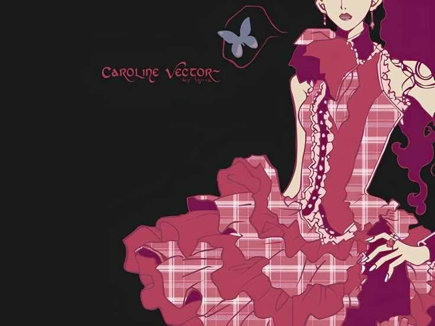

꒰ঌ ໒꒱

New Jeans, também conhecido como NJZ, é um girl group sul-coreano. O grupo originalmente foi composto por cinco integrantes: Minji, Hanni, Haerin, Danielle e Hyein.
Foi formado pela ADOR, uma subsidiária da Hybe Corporation, e pré-lançou seu single de estreia "Attention" em 22 de julho de 2022.